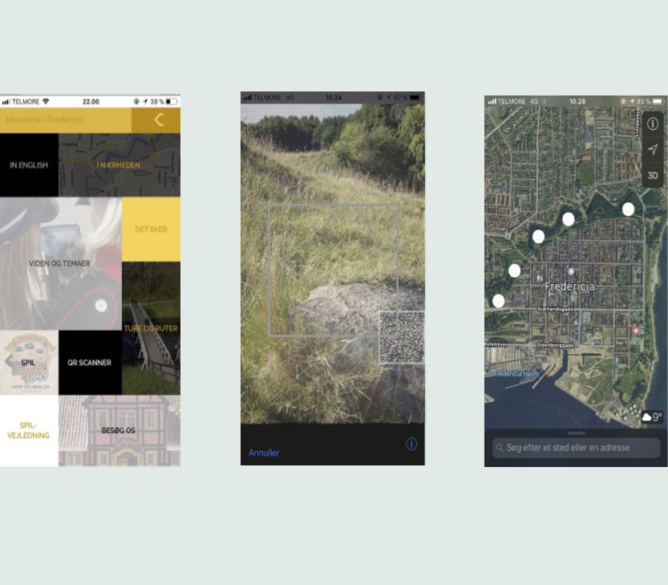

Det afsluttende projekt på 1. semester blev udarbejdet med afsenderen Museerne i Fredericia. Projektet skulle tage udgangspunkt i Voldene, og vi skulle i den forbindelse udarbejde en interaktiv prototype.
Projektets omdrejningspunkt blev afsenderens ønske om at lokke flere personer ud til voldene - og ordet "Visuel" var i særdeleshed i fokus her.
Vi udarbejdede 3 eksempler på lo-fi prototyper, og besluttede hurtigt at gå videre med Augmented Reality.
AR er en teknologi, som kombinere data fra den fysiske verden med virtuelle data, for eksempel ved hjælp af billede og lyd - lidt a la den enorme trend der var i 2016, Pokemon Go.
Ovenover ses eksemplet på en interaktiv prototype. Som billedet ligger der, kan det være lidt svært at se sig ud af. Ved at placere filen i en 360-graders app, vil man kunne få fornemmelsen af at bevæge sig ude på voldene, og få den nøvendige information samt visuelle præsentation der kræves.
Vi udarbejdede også en prototype på en app. Dens funktion skulle være, at informere de besøgende om hvor AR featuren var en mulighed.
AR appen skulle integreres i den allerede eksisterende "Museerne i Fredericia"-app, så der derved kunne spares på omkostninger, samtidig med at hele oplevelsen af besøget ville være samlet i en.

Ved præsentationsmessen designede vi en plakat, for at tiltrække nysgerrige, potentielle kunder til vores stand
Design process
Under udarbejdelsen på dette projekt, brugte vi "Design thinking". I løbet af projektet gennemgik vi 5 processer, fra idé generering, til færdigt produkt.
Vi benyttede os især af brugeranalyser og field research, da produktet skulle lanceres til alle besøgende. Ved bl.a. brug af personaer, fik vi et dybdegående indblik i den besøgendes frustrationer og bekymringer, og kunne derfra udarbejde den færdige prototype, som kunne løse problemstillingerne på bedst mulige måde
Du kan også læse mere om projektet som helhed her
Du kan hente appen som prototype her (kræver Adobe Experience Design)